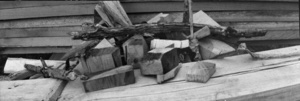

Worldwide Pinhole Photography Day
|
Photographers around the world join together in collaboration on the last Sunday of April each year, to celebrate the low-tech fun of pinhole photography. A bit of googling will give you plenty to read, and view.
All are welcome to participate, and there is one primary rule for inclusion in the official online WPPD gallery. The image you submit must have been made with a pinhole camera on the appointed day. | ||
|
April 26, 2020 was my first time participating in Worldwide Pinhole Photography Day. Unfortunately that day dawned with horrid wind and rain, unlike conditions for the pretty portrait of the camera taken later that week. The exposure was made on Ilford's Harmon Direct Positive paper, and I like the moody and primitive feel of the resulting image. |

|
|
|---|---|---|
|
In addition to making an image, I also designed and built a new, larger camera that same day. The light was fading by the time I finished the camera, and the exposure ran a full hour.
Click here for more details on my 5x7 WPPD 2020 camera. |

| |
|
| ||
| I chose my new 6x17 panoramic camera the next year on April 25, Worldwide Pinhole Photography Day 2021. The weather was a much better than the year before, though still mostly overcast here in Connecticut. We did have a bit of morning rain, but that was done and drying well before I went out to shoot. | ||
| I took a few photos, with my favorite being this collection of rough sawn black locust lumber, and deadfall maple sticks. The locust remains from our son's Eagle Scout project the previous fall, and wintered on the project's makeshift workbench, still in the backyard. I guess he isn't done with the project after all!
Learn more about my 6x17 panoramic camera here. |  | |
Copyright 2023, Thayer Syme
All rights reserved